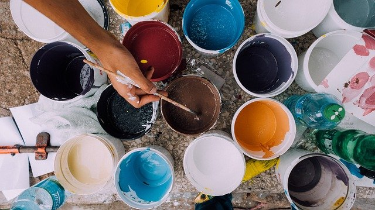

Utilizando el siguiente array:
String[] arrayColores = {"Negro", "Blanco", "Rojo", "Verde", "Azul", "Amarillo"};
implementa en Java un programa que lleve a cabo las siguientes acciones:
- crea una estructura de tipo
Mapdonde las claves sean los elementos de ese array (nombres de colores) y el contenido asociados a cada clave sea un número entero que inicialmente será cero. A continuación, muestra por pantalla el contenido de eseMap; - utilizando nuevamente los elementos del array inicial, rellena una estructura de tipo lista con diez nombres de colores tomados aleatoriamente del array. Muestra también por pantalla el contenido de esa lista;
- a partir de las dos estructuras anteriores, rellena el
Mapde colores con el número de veces que aparezca cada color en la lista (frecuencia de cada color); - muestra por pantalla el contenido final del
Mapde colores.